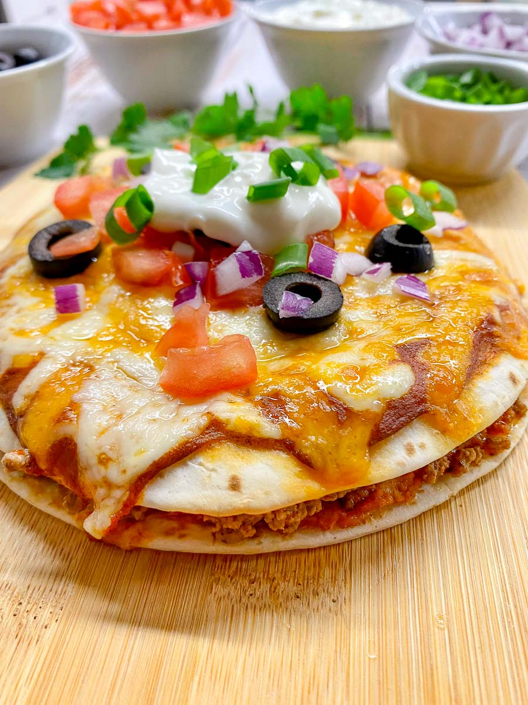

Mexican Pizza

Home
Description
Pizza is an Italian dish of flatbread topped with tomato, cheese, and other ingredients, baked at a high temperature. And this is a Mexican way of doing it.
Ingredients
- ½ pound ground beef
- 1 medium onion, diced
- 1 clove garlic, minced
- 1 tablespoon chili powder
- 1 teaspoon ground cumin
- ½ teaspoon paprika
- ½ teaspoon salt
- ½ teaspoon black pepper
- 1 (16 ounce) can refried beans
- 4 (10 inch) flour tortillas
- ½ cup salsa
- 1 cup shredded Cheddar cheese
-
1 cup shredded Monterey Jack cheese
- 2 green onions, chopped
- 2 tomatoes, diced
- ¼ cup thinly sliced jalapeño pepper
- ¼ cup sour cream (Optional)
How to Make Mexican-Pizza Step-By-Step
- Preheat the oven to 350 degrees F (175 degrees C). Coat 2 pie plates with non-stick cooking spray.
- Place ground beef, onion, and garlic in a skillet over medium heat. Cook until beef is evenly browned and crumbly, 5 to 7 minutes. Drain and discard grease. Season beef with chili powder, cumin, paprika, salt, and pepper.
- Lay one tortilla in each pie plate, and cover with a layer of refried beans. Spread 1/2 of the seasoned ground beef over each one, and then cover with a second tortilla. Bake in the preheated oven until tortillas are crisp, about 10 minutes.
- Remove pizzas from the oven and set aside to cool slightly. Then spread 1/2 of the salsa over each top tortilla. Cover each pizza with 1/2 of the Cheddar and Monterey Jack cheeses. Place 1/2 of the tomatoes, 1/2 of the green onions, and 1/2 of the jalapeño slices onto each one.
- Return pizzas to the oven and bake until cheese is melted, about 5 to 10 more minutes. Let pizzas cool slightly before slicing each one into 4 pieces.